データ基準 2026年11月14日(韓国時間)、米国11月13日終値 · stayhungryasi.com
表記ルール:数値と発言は出典に基づく事実である。「確信度97%」は筆者の主観的な判断である。確認できなかった項目は「未確認」と記した。11月14日22時(韓国時間)の再確認でも、カタンザロ氏以外に名簿の人物の公開発言はなかった。投資助言ではない。
要点を11枚にまとめた。画像をタップすると拡大できる。
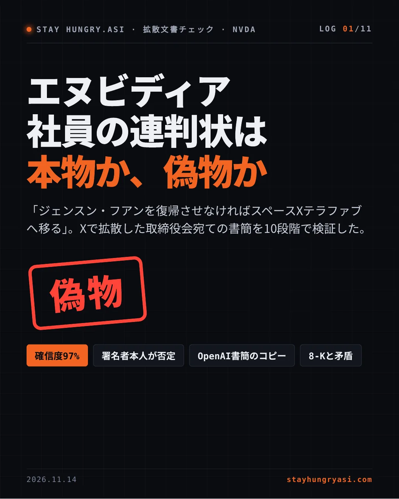
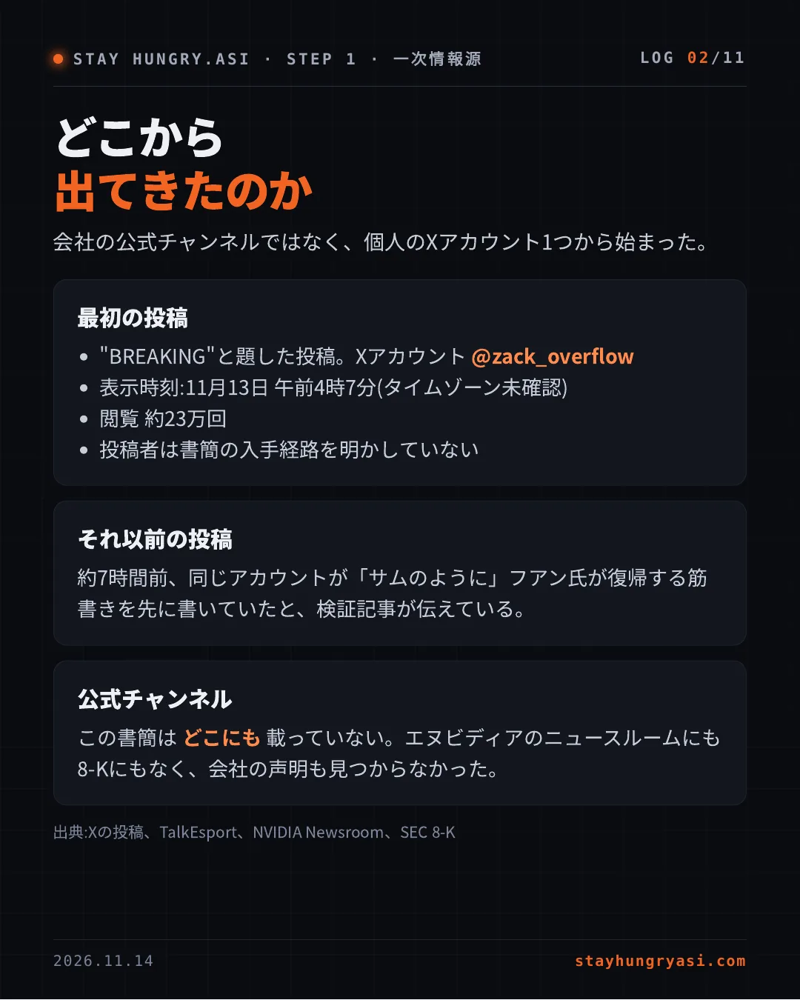
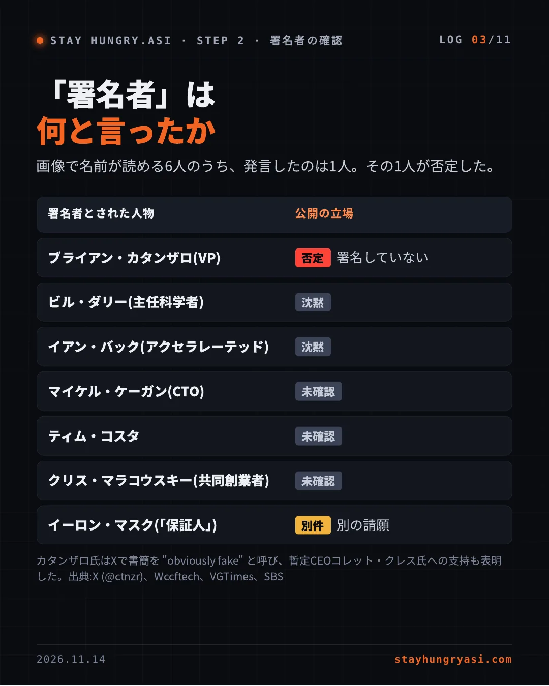
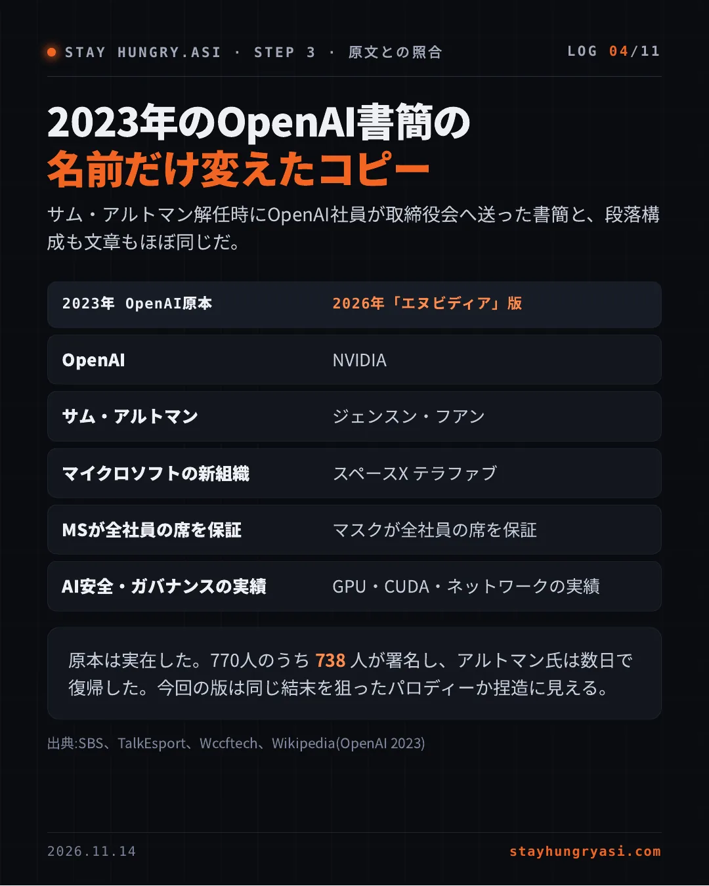
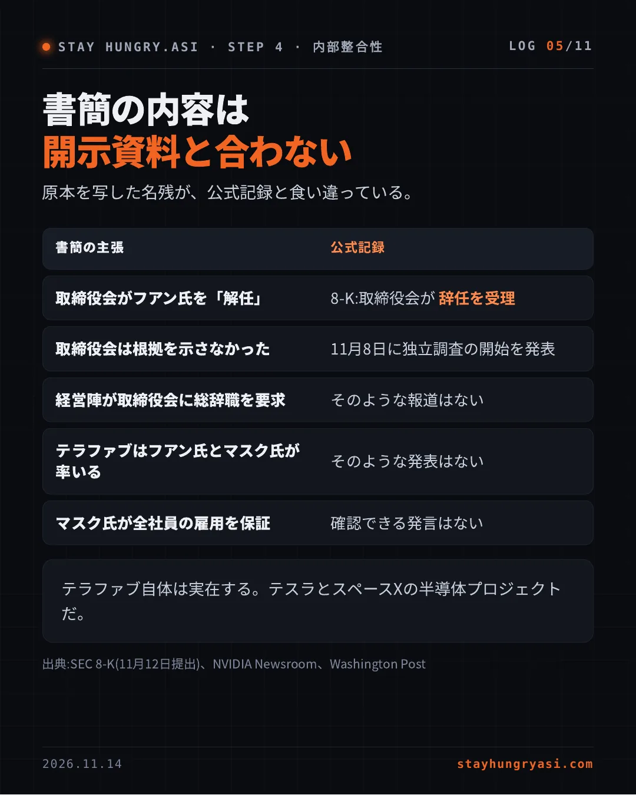
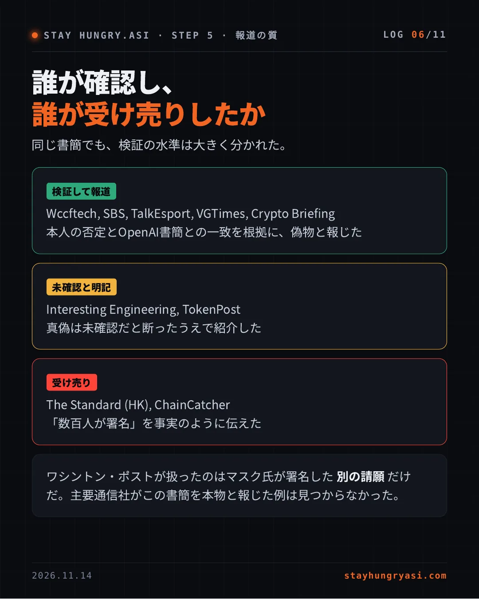
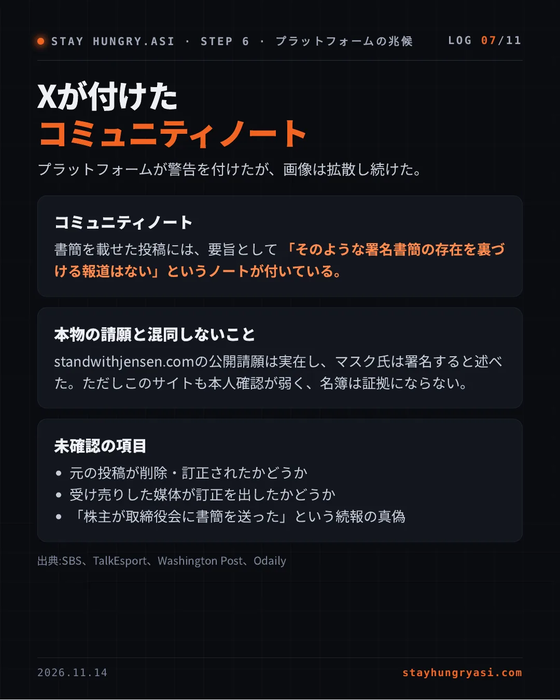
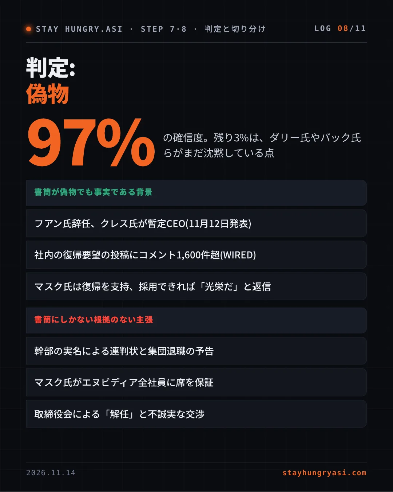
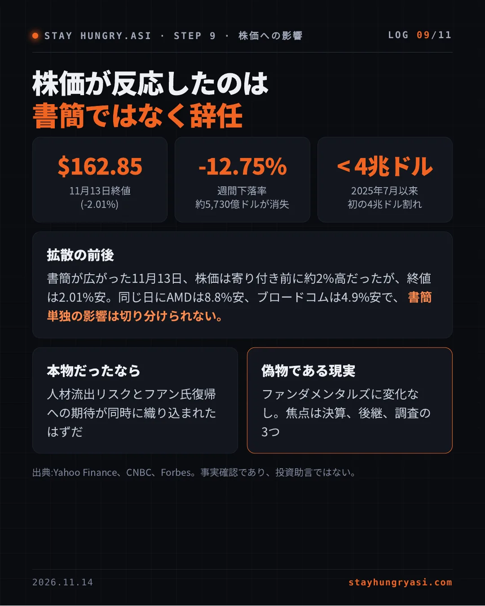
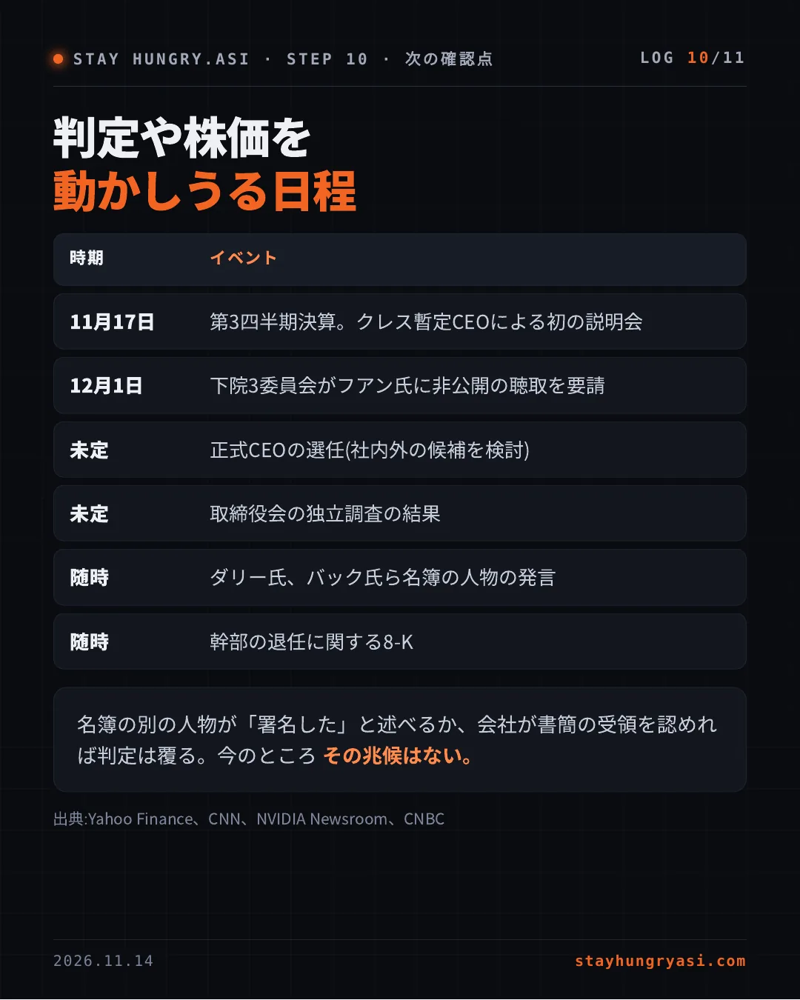
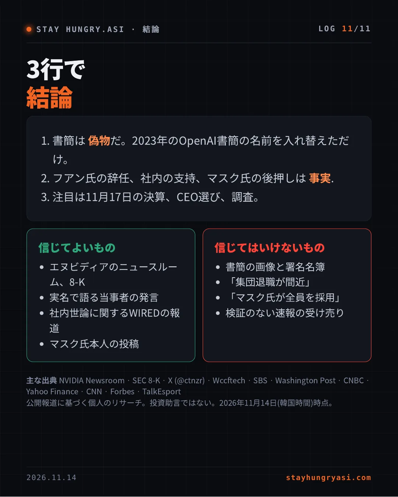
会社の公式チャンネルではなく、個人のXアカウント1つから始まった。
約7時間前、同じアカウントが「サムのように」フアン氏が復帰する筋書きを先に書いていたと、検証記事が伝えている。
この書簡は どこにも 載っていない。エヌビディアのニュースルームにも8-Kにもなく、会社の声明も見つからなかった。
出典:Xの投稿、TalkEsport、NVIDIA Newsroom、SEC 8-K
画像で名前が読める6人のうち、発言したのは1人。その1人が否定した。
| 署名者とされた人物 | 公開の立場 |
|---|---|
| ブライアン・カタンザロ(VP) | [否定] 署名していない |
| ビル・ダリー(主任科学者) | [沈黙] |
| イアン・バック(アクセラレーテッド) | [沈黙] |
| マイケル・ケーガン(CTO) | [未確認] |
| ティム・コスタ | [未確認] |
| クリス・マラコウスキー(共同創業者) | [未確認] |
| イーロン・マスク(「保証人」) | [別件] 別の請願 |
カタンザロ氏はXで書簡を "obviously fake" と呼び、暫定CEOコレット・クレス氏への支持も表明した。出典:X (@ctnzr)、Wccftech、VGTimes、SBS
サム・アルトマン解任時にOpenAI社員が取締役会へ送った書簡と、段落構成も文章もほぼ同じだ。
| 2023年 OpenAI原本 | 2026年「エヌビディア」版 |
|---|---|
| OpenAI | NVIDIA |
| サム・アルトマン | ジェンスン・フアン |
| マイクロソフトの新組織 | スペースX テラファブ |
| MSが全社員の席を保証 | マスクが全社員の席を保証 |
| AI安全・ガバナンスの実績 | GPU・CUDA・ネットワークの実績 |
原本は実在した。770人のうち 738 人が署名し、アルトマン氏は数日で復帰した。今回の版は同じ結末を狙ったパロディーか捏造に見える。
出典:SBS、TalkEsport、Wccftech、Wikipedia(OpenAI 2023)
原本を写した名残が、公式記録と食い違っている。
| 書簡の主張 | 公式記録 |
|---|---|
| 取締役会がフアン氏を「解任」 | 8-K:取締役会が 辞任を受理 |
| 取締役会は根拠を示さなかった | 11月8日に独立調査の開始を発表 |
| 経営陣が取締役会に総辞職を要求 | そのような報道はない |
| テラファブはフアン氏とマスク氏が率いる | そのような発表はない |
| マスク氏が全社員の雇用を保証 | 確認できる発言はない |
テラファブ自体は実在する。テスラとスペースXの半導体プロジェクトだ。
出典:SEC 8-K(11月12日提出)、NVIDIA Newsroom、Washington Post
同じ書簡でも、検証の水準は大きく分かれた。
Wccftech, SBS, TalkEsport, VGTimes, Crypto Briefing
本人の否定とOpenAI書簡との一致を根拠に、偽物と報じた
Interesting Engineering, TokenPost
真偽は未確認だと断ったうえで紹介した
The Standard (HK), ChainCatcher
「数百人が署名」を事実のように伝えた
ワシントン・ポストが扱ったのはマスク氏が署名した 別の請願 だけだ。主要通信社がこの書簡を本物と報じた例は見つからなかった。
プラットフォームが警告を付けたが、画像は拡散し続けた。
書簡を載せた投稿には、要旨として 「そのような署名書簡の存在を裏づける報道はない」というノートが付いている。
standwithjensen.comの公開請願は実在し、マスク氏は署名すると述べた。ただしこのサイトも本人確認が弱く、名簿は証拠にならない。
出典:SBS、TalkEsport、Washington Post、Odaily
97% の確信度。残り3%は、ダリー氏やバック氏らがまだ沈黙している点
| 書簡が偽物でも事実である背景 |
|---|
| フアン氏辞任、クレス氏が暫定CEO(11月12日発表) |
| 社内の復帰要望の投稿にコメント1,600件超(WIRED) |
| マスク氏は復帰を支持、採用できれば「光栄だ」と返信 |
| 書簡にしかない根拠のない主張 |
|---|
| 幹部の実名による連判状と集団退職の予告 |
| マスク氏がエヌビディア全社員に席を保証 |
| 取締役会による「解任」と不誠実な交渉 |
書簡が広がった11月13日、株価は寄り付き前に約2%高だったが、終値は2.01%安。同じ日にAMDは8.8%安、ブロードコムは4.9%安で、 書簡単独の影響は切り分けられない。
人材流出リスクとフアン氏復帰への期待が同時に織り込まれたはずだ
ファンダメンタルズに変化なし。焦点は決算、後継、調査の3つ
出典:Yahoo Finance、CNBC、Forbes。事実確認であり、投資助言ではない。
| 時期 | イベント |
|---|---|
| 11月17日 | 第3四半期決算。クレス暫定CEOによる初の説明会 |
| 12月1日 | 下院3委員会がフアン氏に非公開の聴取を要請 |
| 未定 | 正式CEOの選任(社内外の候補を検討) |
| 未定 | 取締役会の独立調査の結果 |
| 随時 | ダリー氏、バック氏ら名簿の人物の発言 |
| 随時 | 幹部の退任に関する8-K |
名簿の別の人物が「署名した」と述べるか、会社が書簡の受領を認めれば判定は覆る。今のところ その兆候はない。
出典:Yahoo Finance、CNN、NVIDIA Newsroom、CNBC
主な出典 NVIDIA Newsroom · SEC 8-K · X (@ctnzr) · Wccftech · SBS · Washington Post · CNBC · Yahoo Finance · CNN · Forbes · TalkEsport
公開報道に基づく個人のリサーチ。投資助言ではない。2026年11月14日(韓国時間)時点。